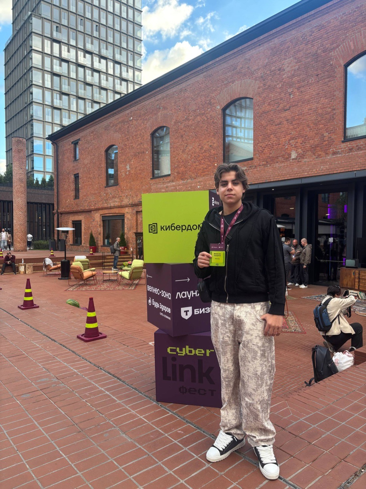

Второй мозг — управляющий центр компании: память, задачи, проекты, отделы.
Пудра работает в кондитерской Артёма Кириловского в Москве: такой же ИИ-специалист, только выведенный наружу — внутри такие ведут отделы, здесь разговаривает с покупателями.
открыть переписку целиком
В Stories Lounge расстановкой по сменам занимается ИИ-специалист: держит график целиком и следит, чтобы ни одна смена не осталась без людей.
посмотреть, как устроен график
Второй специалист того же заведения разговаривает с кандидатами сам: ведёт интервью, задаёт вопросы по делу и приносит владельцу итог, а не стопку откликов.
открыть интервью целиком

27 августа 2026
Первый выход Whoopy на площадку — ездил Слава. По делу: технологии, живые проекты, никакого официоза. Будем ездить дальше.
разбор · 3 минуты
В каждой компании есть «так у нас нельзя», за которым давно ничего нет. Мы нашли такое у себя — и записал его не человек.
читатькак мы работаем · 3 минуты
Владельцы уже не спрашивают, может ли ИИ. Они спрашивают, доделаем ли мы. Вот как мы на это отвечаем.
читатьСобираем второй мозг
под вашу компанию
Закрывает направления, в которых владелец не разбирается или до которых не доходят руки.
Управляющий центр с отделами и памятью. Владелец продолжает делать то, в чём он лучший, — остальное ведёт мозг.
что входит
Сотрудник со своей памятью и своей зоной. Внутри такие ведут отделы, снаружи — принимают заказы, как Пудра в кондитерской.
что входит
Где мы
Канал компании
Разборы целиком
Короткое и живое
Канал в Max